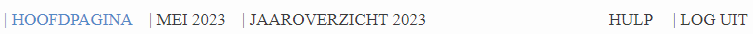
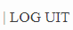
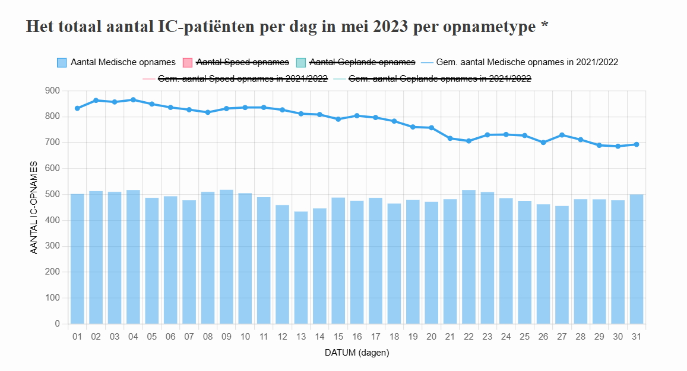
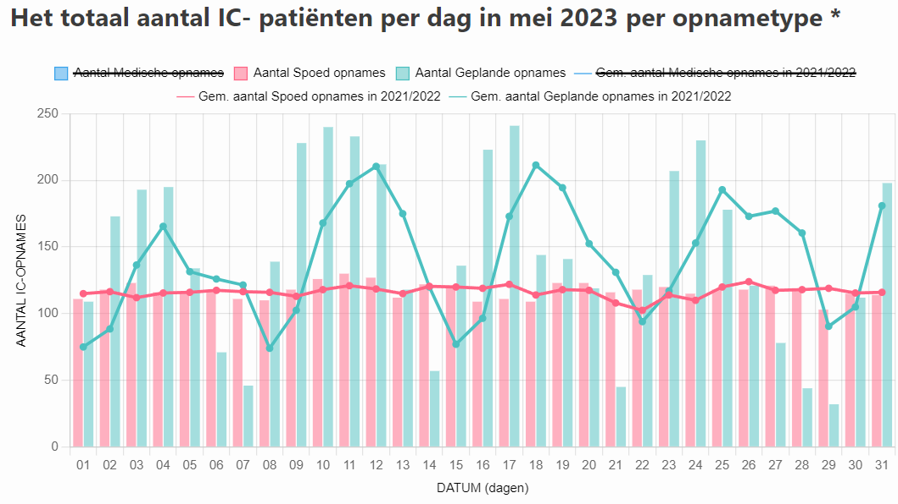
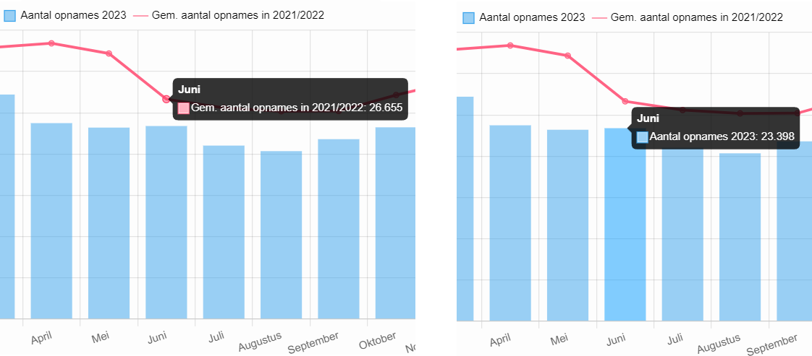

Hulp pagina
Welkom bij de hulp pagina voor het IC Bedbezetting Dashboard prototype. Deze pagina helpt u om effectief door het dashboard te navigeren en optimaal gebruik te maken van de beschikbare gegevens en grafieken. Hier vindt u uitleg over de verschillende functies van het dashboard, inclusief hoe u kunt navigeren en interacteren met de grafieken.
Navigatie-instructies
De navigatiebalk vindt u bovenaan elk scherm. Hier kunt u navigeren tussen de verschillende tabbladen. Zo kunt u bijvoorbeeld het jaaroverzicht 2023 inzien door op het tabblad "jaaroverzicht 2023" te klikken. Het tabblad dat u momenteel bekijkt, is altijd blauw gekleurd, terwijl de overige beschikbare tabbladen zwart zijn.
Uitloggen
U kunt uitloggen door op de "log uit"-knop rechts boven in het scherm te klikken. Zo ziet deze knop eruit:
Als u op deze knop klikt, krijgt u een melding om te bevestigen dat u wilt uitloggen.
Interactie met de grafieken
Filteren op gegevens
Als u geïnteresseerd bent in specifieke data van een grafiek kunt u de zichtbaarheid van de verschillende gegevens aanpassen.
In de bovenstaande grafiek worden drie verschillende opnametypes weergegeven, samen met lijngrafieken die het gemiddelde aantal opnames (per opnametype) van de voorgaande jaren tonen. Standaard wordt slechts één gegevenssoort zichtbaar getoond, terwijl de overige gegevens doorgestreept worden weergegeven in de legenda. Als u naast het aantal medische opnames, wat al wordt weergegeven in de grafiek, ook de grafiek van het aantal spoed opnames wilt zien, kunt u op het "aantal spoed opnames" in de legenda te klikken.
De streep door de tekst verdwijnt dan en de data wordt weergegeven in de grafiek. Andersom werkt dit exact hetzelfde, door opnieuw op de titel in de legenda te klikken verdwijnt de bijbehorende data uit de grafiek en wordt de titel doorgestreept. Zo ziet de grafiek eruit als u enkel het aantal spoed- en geplande opnames wilt zien:
Aantallen tonen
Als u met uw muis over de grafieken veegt, worden de absolute aantallen getoond van bijvoorbeeld een balkje in een staafgrafiek of een bolletje in een lijngrafiek. Tevens wordt er getoond om welke dag/maand de data gaat. Dit biedt informatie over de specifieke gegevenspunten binnen de grafiek.
In de eerste afbeelding hierboven kunt u zien dat het gemiddelde aantal opnames van voorgaande jaren in de maand juni gemiddeld 26.655 was. In de afbeelding ernaast kunt u zien dat het aantal opnames in 2023 in juni 23.398 was.
Op deze manier kunt u de grafieken aanpassen aan uw specifieke informatiebehoeften, waardoor u gemakkelijker inzicht krijgt in de gegevens die voor u relevant zijn.
Vragen of opmerkingen
Bij overige onduidelijkheden, vragen of opmerkingen kunt u ons bereiken op MIKprototypedashboard@hotmail.com (geen echte email).
Downloads
Hier kunt u de Gebruikers- en beheerdershandleiding downloaden als u het bovenstaande overzicht als pdf wilt zien.